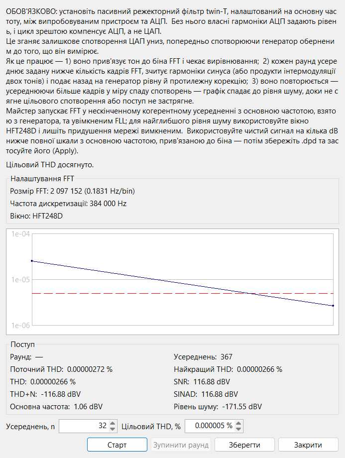

Ця сторінка описує елементи керування майстра. Чому він працює саме так — обов'язковий двійний Т-подібний режектор, чому основну частоту беруть з генератора, як глибоке когерентне усереднення видобуває гармоніки та як збігається цикл корекції — дивіться Теорія ▸ Предспотворення ЦАП.
Майстер зганяє власне гармонічне спотворення ЦАП униз, щоб
стимулювальний сигнал був чистішим, ніж перетворювач здатен видати
природно — те, що потім показує FFT-аналізатор, є
спотворенням випробовуваного пристрою, а не джерела. Він вимірює гармоніки
ЦАП за режекторним фільтром і подає назад на працюючий генератор рівну й
протилежну корекцію, повторюючи раундами, доки спотворення не сягне вашої
цілі або перестане покращуватися. Результат зберігається як файл
.dpd і застосовується до
компенсованих форм
сигналу генератора.

Відкрийте його кнопкою з піктограмою чарівної палички на панелі інструментів FFT-панелі (ліворуч від кнопки запису, лише в живій панелі). Перед стартом генератор має вже відтворювати синусоїдний, компенсований синусоїдний або двотональний сигнал — цикл скасовує гармоніки одного тону або продукти інтермодуляції двотонального сигналу; будь-яка інша форма сигналу відхиляється. Майстер запускає FFT у необмеженому когерентному усередненні з основною частотою, взятою з генератора, та увімкненим FLL; для найглибшого рівня шуму використовуйте вікно HFT248D і лишіть придушення мережі вимкненим, і подавайте чистий тон на кілька dB нижче повної шкали з основною частотою, прив'язаною до біна.
| Елемент керування | Призначення |
|---|---|
| Усереднень, n | Усереднень FFT за раунд (мінімум 10). Кожен раунд усереднює стільки кадрів, а потім нарощує цю кількість пропорційно до того, наскільки вже впало спотворення — тож пізні раунди усереднюють значно глибше за ранні. Колесо миші крокує на 10, стрілки — на 1. |
| Цільовий THD, % | Зупинитися, щойно спотворення сягне цього значення; 0 працює, доки воно не застрягне. Приймає суб-ppm значення (вісім знаків після коми) і малюється червоною пунктирною лінією на графіку збіжності, щоб ви бачили ціль. |
| Старт / Стоп | Старт запускає замкнений цикл і стає Стоп під час роботи. Цикл також зупиняється сам, коли сягає цілі або застрягає. |
| Зупинити раунд | Завершити поточний раунд усереднення зараз — застосувати виміряну досі корекцію та перейти до наступного раунду. Використовуйте, коли спектр перестав покращуватися й ви не хочете чекати решту усереднень. Активна лише поки раунд усереднює. |
| Зберегти | Записати найкращий результат у файл .dpd (стає активною
після завершення раунду). Запропонована назва кодує частоту тону,
розмір FFT, перекриття, вікно та досягнуте спотворення в ppm. |
| Застосувати | Зберегти стає Застосувати, щойно файл записано. Застосувати
завантажує цей .dpd на працюючий генератор і перемикає
його на компенсовану форму (компенсований синус / два тони)
без перезапуску, потім закриває майстер. |
| Закрити | Зупинити цикл, повернути генератор до простого тону (якщо ви не застосували файл) і скинути статистику FFT. |
Блок Налаштування FFT відтворює розмір, частоту дискретизації та вікно, які прогін успадковує з FFT-панелі (лише для читання — задайте їх там заздалегідь). Рядок стану повідомляє поточну фазу: вирівнювання тону на його бін FFT, номер раунду та кількість усереднень, що лишилися, застосування корекції або усталення після неї.
Графік збіжності відкладає спотворення кожного завершеного раунду на логарифмічній осі, розставляючи маркери вздовж горизонталі пропорційно до того, наскільки глибоко усереднював цей раунд — тож довгий, глибокий пізній раунд займає більше кривої, ніж швидкий ранній — і спадає до червоної лінії цілі.
Блок Поступ перелічує живі показники. Для одного тону це номер раунду, поточний THD і THD останнього раунду, найкращий THD дотепер, поточний лічильник усереднень, а також THD+N, SNR, SINAD, основна частота та рівень шуму (dBV). Для двотонального сигналу цикл мінімізує інтермодуляцію, тож показники THD замінюються на IMD, найкращий IMD та D+N.